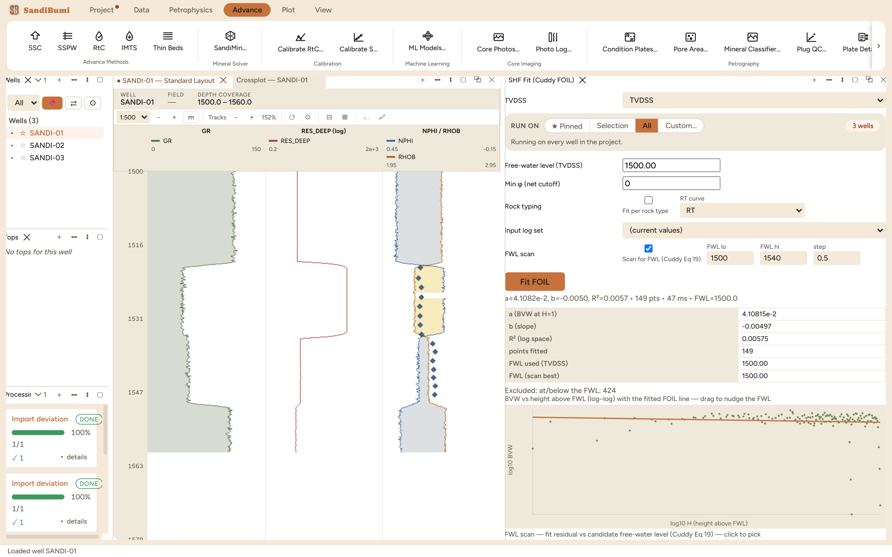

The SHF Fit pane fits a saturation-height function to the interpreted
logs: five families (Cuddy FOIL, Brooks-Corey, Skelt-Harrison, Thomeer's
log-hyperbola, Leverett-J), fitted on computed porosity, saturation and a
true-vertical depth curve above a free-water level. Reach for it when the
study needs saturation as a function of height rather than of resistivity:
volumetrics away from well control, or a saturation model for a simulator
that never sees a log.
The pane

A Cuddy FOIL fit over three wells: 149 points above the
free-water level, 424 excluded below it, and a log-log BVW versus
height cloud that is visibly flat.
Inputs are curves, not core: porosity, water saturation and
TVDSS selects, plus permeability for Leverett-J. The fit refuses,
naming the reason, when the wells carry no usable TVDSS samples; a
project with no deviation surveys has no height axis to fit
against.
The FWL can be scanned, not just typed: "Scan for FWL (Cuddy
Eq 19)" tries candidates across a range and picks the best residual;
the scan plot below the fit shows the whole residual curve, and the
BVW plot's fitted line can be dragged to nudge the FWL by hand.
Fit per rock type splits the fit by a rock-type curve, one
parameter set per class.
Step by step
Open the pane (workspace ＋ menu ▸ SHF Fit), point the
three selects at the study's PHIE, SWE and TVDSS, and set a porosity
cutoff so shale never enters the fit.
Enable the FWL scan over a range that brackets the deepest
hydrocarbon shows, and press Fit FOIL.
Read the scan plot before the coefficients: one sharp minimum is a
contact, a flat residual curve means the data does not locate
one.
Reading the result
The example is a deliberate negative result, and worth understanding:
b = −0.005 with R² = 0.006 over 149 points.
The FOIL model says bulk volume water falls as a power of height; this sand
sits at irreducible saturation throughout, with no transition zone, so
height explains nothing and the scan pins the FWL to the edge of its range.
That is the correct reading of this rock, not a failed fit: a
saturation-height function earns its coefficients only where a transition
zone exists, and the flat cloud in the figure is the evidence to quote when
explaining why the study carries no SHF.
QC and pitfalls
An FWL pinned to the scan edge is not a pick. It means the
minimum lies outside the range or does not exist; widen the range or
accept that these wells do not see the contact.
Fit above the FWL only, and count the exclusions. The pane
reports how many samples fell at or below the FWL; a fit dominated by
near-contact points measures the transition zone's noise, not its
shape.
One fit per rock type when the Pd differs. A single FOIL
through two rock qualities averages two curves into neither; the
per-rock-type option exists for exactly that case.